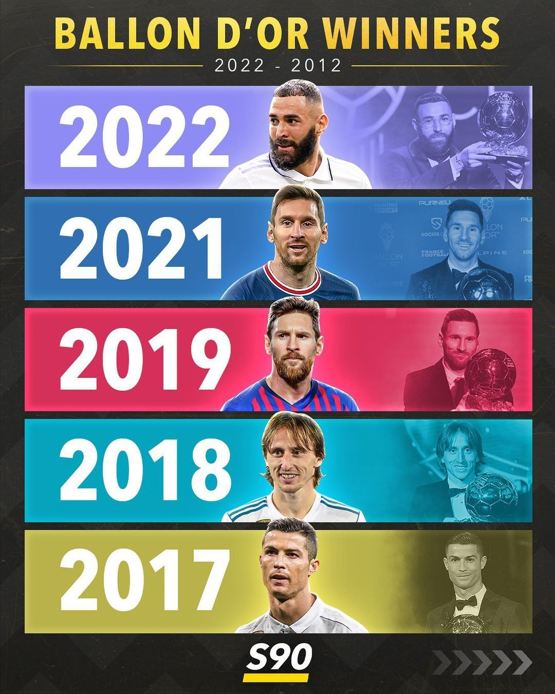

About the Ballon D'or
The Ballon d'Or is one of the most prestigious individual awards in the world of football, presented annually by France Football. It recognizes the best male footballer in the world. Here's a look at the winners from the past ten years:
History
Learn More

Winners
Here's a look at the winners from the past ten years:
Winners
Learn More
Most winner of the Ballon D'or
Lionel Messi, widely regarded as one of the greatest footballers of all time, has won the prestigious Ballon d'Or award 7 times as of January 2022. He secured these accolades in the years 2009, 2010, 2011, 2012, 2015, 2019, and 2021. These wins, spanning over a decade, attest to Messi's consistency, skill, and impact in the world of football.
Most winner of the Ballon D'or